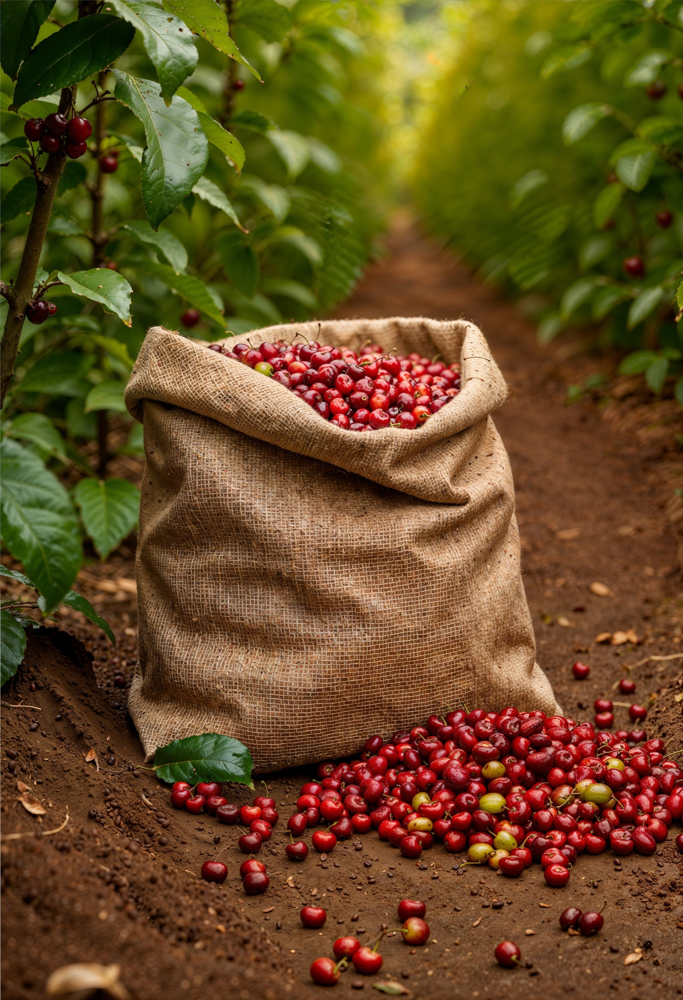
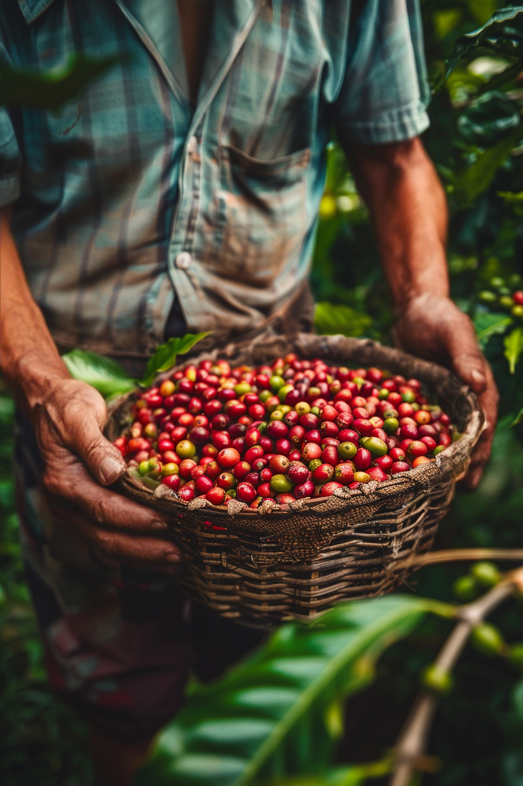
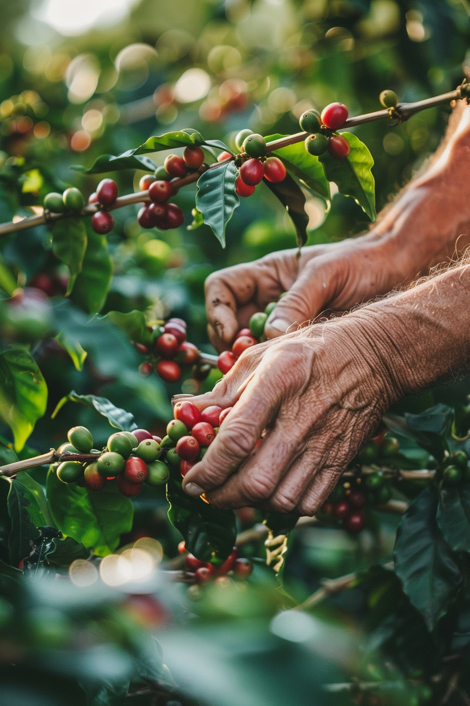
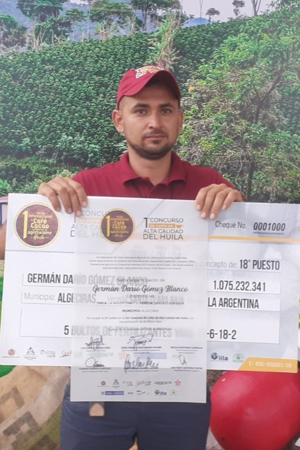
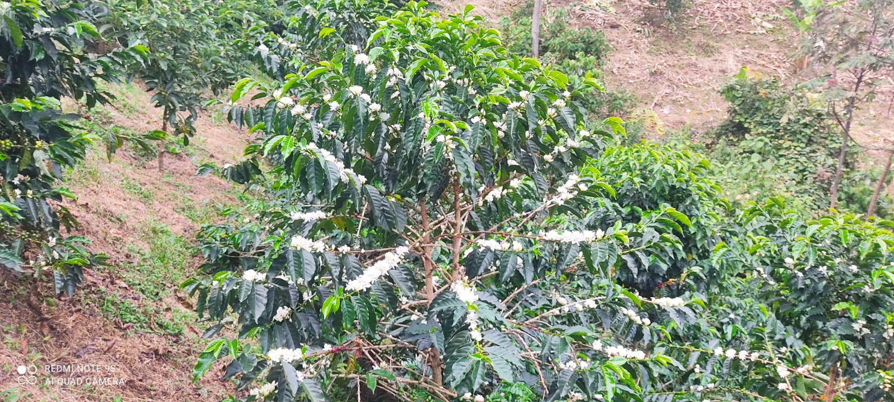
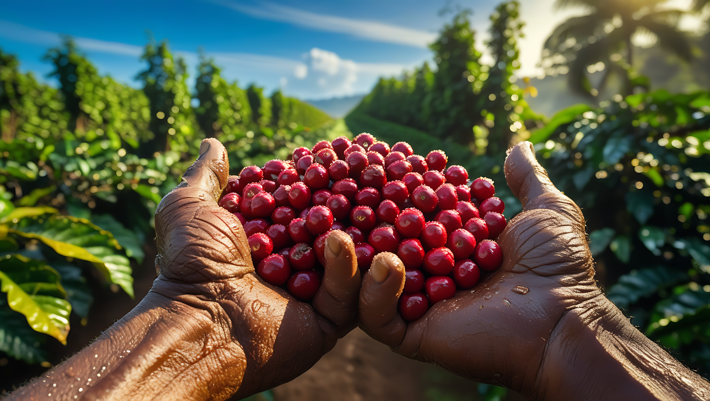

Sobre nosotros
En Isla Verde Finca Cafetera cultivamos café con pasión y respeto por la tierra. Desde nuestros orígenes, hemos trabajado para combinar tradición y sostenibilidad, produciendo granos de la más alta calidad que reflejan el sabor auténtico de nuestra región.
Nuestra Historia

Café Isla Verde S.A.S es un legado que se remonta a 1987, cuando Luis María Gómez Casallas y Gladis Erminda Blanco Vergara llegaron a la finca La Argentina, en Algeciras, Huila.
A lomo de mula y con trabajo incansable, se desarrolló infraestructura clave para la producción de café, logrando altos estándares de calidad y reconocimiento en la región.
Con el paso de los años, la finca evolucionó, adaptándose a nuevas variedades como Castillo, ajustando su producción a las condiciones del entorno.

En 2012, los hijos de Luis María y Gladis - Javier y Germán, hermanos gemelos y un verdadero milagro de vida - realizaron, a través del SENA en el Centro de Formación Agroindustrial La Angostura, un curso sobre tostión, catación y barismo. Este fue el punto de partida para que la familia Gómez Blanco descubriera el mundo del café de especialidad, despertando un nuevo interés por los procesos de transformación y la calidad en taza.

En 2020, se inició la recuperación de áreas de café y variedades de alta proyección para especialidad, sembrando un lote pequeño de Java. En 2021 se incorporó un lote de Colombia, en 2022 se sumaron Bourbon Amarillo, Bourbon Rojo y un microlote de Bourbon Rosado. En 2024, debido a la importancia de las abejas y la pasión por la apicultura, se instaló el Apiario Isla Verde con 10 núcleos, con el objetivo de preservación y de aportar al enfoque de sostenibilidad y ecología.

En 2024, Luis Alexander Gómez Blanco, hijo mayor de la familia y fundador de la empresa, se tituló como Técnico en Servicios de Barismo y presentó al programa Fondo Emprender un proyecto de producción y comercialización de café, resultando beneficiario. Este impulso fue decisivo para formalizar el 15 de enero de 2025 la constitución de Café Isla Verde S.A.S en la Cámara de Comercio del Huila, iniciando oficialmente operaciones.
Misión

En Café Isla Verde producimos y transformamos cafés de especialidad desde la semilla hasta la taza, con procesos cuidadosamente controlados, respeto por la naturaleza y pasión por la calidad. Trabajamos para ofrecer experiencias sensoriales únicas a nuestros clientes, generando valor para nuestra familia, nuestra comunidad y la cultura cafetera colombiana, construyendo una empresa sostenible basada en el conocimiento, la tradición y la innovación.
Visión

Para el año 2035, Café Isla Verde será una empresa reconocida en Colombia por la producción de cafés de especialidad de alta calidad, procesos diferenciados y trazabilidad desde la finca hasta la taza. Contará con cafeterías propias, una marca posicionada en el mercado nacional y proyección internacional, siendo un referente de emprendimiento rural, sostenibilidad, cultura cafetera y construcción de paz en el territorio.
Valores

Calidad
Buscamos la excelencia en cada etapa del proceso, desde el cultivo hasta la taza.
Pasión por el café
Amamos el café y trabajamos con dedicación para resaltar lo mejor de cada grano.
Respeto por la naturaleza
Producimos café de manera responsable, cuidando el suelo, el agua y el entorno natural.
Honestidad
Trabajamos con transparencia, responsabilidad y compromiso en cada relación comercial.
Innovación
Implementamos nuevos procesos, fermentaciones y tecnologías para mejorar la calidad del café.
Tradición
Honramos el conocimiento y la historia cafetera transmitida de generación en generación.
Compromiso social
Buscamos generar desarrollo en nuestra comunidad y aportar a la construcción de paz en el territorio.
Servicio
Queremos que cada cliente viva una experiencia especial alrededor del café.
Disciplina
Creemos que la constancia y el trabajo bien hecho construyen empresas sólidas.
Amor por la tierra
Reconocemos la tierra como el origen de todo y trabajamos para cuidarla y hacerla productiva de manera sostenible.